Universidad de Monterrey · SC3705
Ejercicio guiado 02: librería web monolítica
Probar la librería
Desde esta página se abre la librería en el navegador. Así el ejercicio sigue funcionando cuando el sitio se copia a ubiquitous (Apache solo sirve HTML, CSS y JS).
Cuentas de demostración: administradora mariana.solis@libreriaonline.mx / LibreriaAdmin26 · lector carlos.hernandez@gmail.com / Libreria2026.
El monolito de entrega (Node.js + Express + EJS + PostgreSQL) vive en library/ y se ejecuta en la VM. En ubiquitous esa carpeta no se sirve: no lleva Node ni se publican .env ni node_modules.
1 Portada
| Ejercicio | Aplicación web monolítica para gestión de una librería |
|---|---|
| Estudiante | Juan Pablo Ramos Salazar |
| Matrícula | 610248 |
| Grupo y hora | Integración de Aplicaciones Computacionales M/V 2:30pm-4:00pm |
| Semestre | 2026 |
| Fecha | 31 de agosto de 2026 |
| Profesor | Dr. Raúl Morales Salcedo |
| Institución | Universidad de Monterrey |
2 Objetivo y alcance
Diseñar, construir, probar, desplegar y documentar una aplicación web monolítica en Node.js para la gestión de una librería en línea, con acceso directo a PostgreSQL. El propósito no es solo “que funcione”, sino justificar decisiones de requisitos, datos, arquitectura, seguridad, pruebas y publicación.
La solución renderiza HTML en el servidor, administra usuarios registrados, implementa CRUD sobre el modelo normalizado, maneja imágenes de libros y registra conceptos y definiciones por libro.
Restricciones
- Monolito server-side: Node.js, Express y EJS.
- Acceso a PostgreSQL con
pgy SQL parametrizado / stored procedures. - Sin REST, GraphQL, SOAP ni microservicios.
- Sin JSON/XML como intercambio frontend–backend.
- Máximo un Administrador, reforzado también en la base de datos.
- Quien visita el sitio entra por el servidor web; la aplicación no se publica como un puerto interno abierto a Internet.
3 Análisis de requisitos
Documento completo: docs/REQUIREMENTS.md. Resumen de requisitos funcionales:
| ID | Requisito | Criterio breve |
|---|---|---|
| RF-01 | Registro | Cuenta con hash; rol client |
| RF-02 / 03 | Login y logout | Sesión httpOnly; cierre destruye sesión |
| RF-04–07 | Catálogo y búsqueda | ISBN, título, ficha con autores y conceptos |
| RF-08–13 | CRUD admin | Libros, autores, géneros, formatos, categorías, conceptos |
| RF-14–16 | Relaciones M:N | Autores, géneros y definiciones por libro |
| RF-17–18 | Imágenes, stock, precio | Portada, alt, CHECK ≥ 0 |
| RF-19–20 | Autorización | 403 a clientes; un solo admin en BD |
Actores
- Visitante: login y registro. Sin catálogo.
- Usuario registrado (
client): catálogo, búsqueda, detalle. Sin CRUD. - Administrador: todo lo anterior más CRUD, imágenes, conceptos y usuarios. No puede crear un segundo admin.
Riesgos iniciales: acceso no autorizado, SQL Injection, uploads peligrosos, exposición de credenciales, borrado accidental y publicación de secretos.
4 Decisiones de arquitectura y diagrama del monolito
Flujo: Navegador → Apache/NGINX → Node.js/Express → módulos internos → PostgreSQL / disco uploads/. Presentación, lógica y datos viven en un solo proceso desplegable. Dividir carpetas no convierte esto en microservicios. El reverse proxy no es un servicio de negocio.
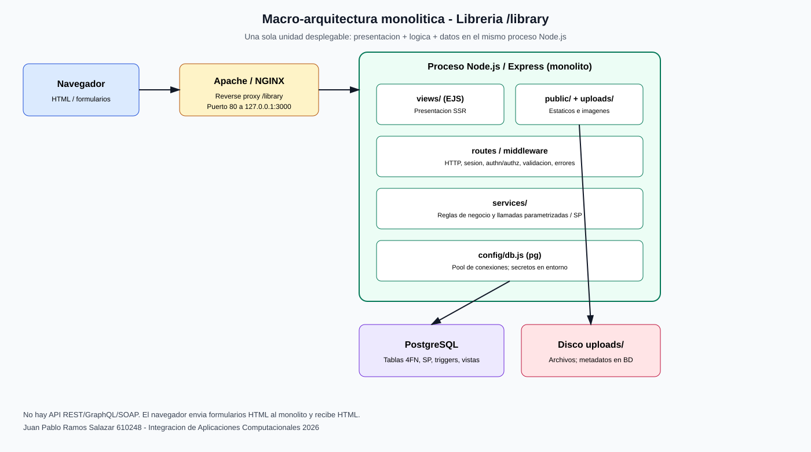
Tres decisiones mínimas (detalle en ENGINEERING_DECISIONS.md):
- Monolito server-side frente a SPA+API o microservicios: el enunciado pide HTML generado en el servidor y un equipo pequeño.
- SQL parametrizado + SP frente a ORM: hay que demostrar PK/FK/CHECK y pruebas negativas reales de PostgreSQL.
- EJS + formularios frente a JSON: cumple la restricción de intercambio y simplifica el despliegue.
5 Diseño de la base de datos, diagrama ER y 4FN
Síntesis completa: NORMALIZATION_4FN.md · plantilla de clase: NORMALIZATION_4FN.xlsx.
Relación inicial no normalizada (listas de autores, géneros, imágenes y conceptos). La definición depende de (Libro, Concepto), no solo del concepto.
- 1FN: valores atómicos; desaparecen listas.
- 2FN:
BOOKScon atributos que dependen de la clave del libro. - 3FN/BCNF: catálogos
FORMATSyCATEGORIES. - 4FN: MVDs independientes ISBN ↠ autor, género, imagen y concepto → tablas puente.
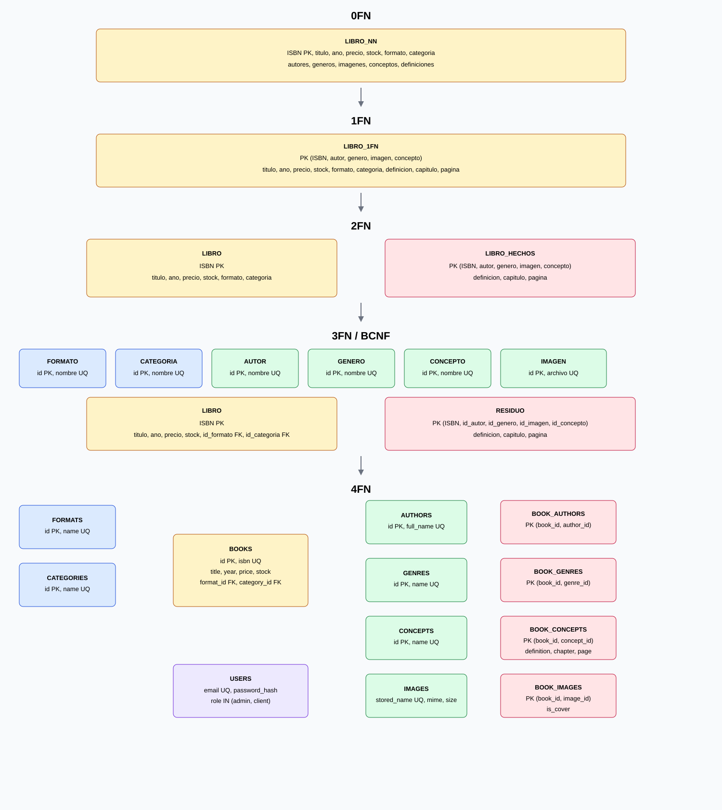
img/NORMALIZATION_PROCESS.svg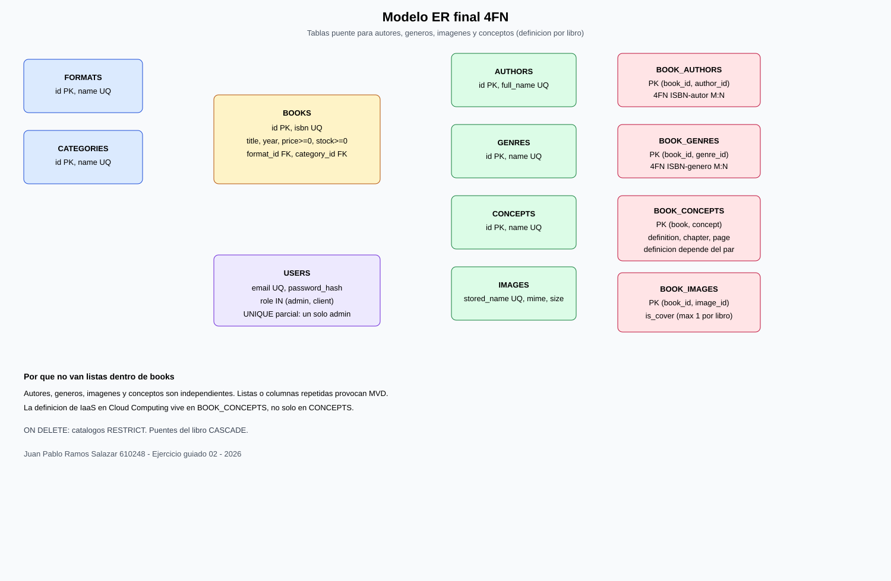
img/DB_DESIGN_ER_4FN.svgPuentes: book_authors, book_genres, book_images, book_concepts (definición, capítulo, página). El administrador único es cardinalidad sobre users.role = 'admin' (índice parcial + trigger), no una MVD.
6 Infraestructura GCP y PostgreSQL
Comandos base en docs/GCP_COMMANDS.md. Dimensionamiento: e2-medium en us-central1-a, imagen CentOS Stream 10, HTTP 80, sin abrir TCP/3000 a Internet. Las capturas viven en evidencias/; no se publican contraseñas ni llaves SSH.
gcloud compute instances create library-monolith \ --zone=us-central1-a \ --machine-type=e2-medium \ --image-family=centos-stream-10 \ --image-project=centos-cloud \ --boot-disk-size=30GB \ --tags=http-server,library-ssh
Scripts en orden (copias de entrega en sql/):
- 00_create_database.sql
- 01_schema.sql
- 02_seed_30_per_table.sql
- 03_all_quieries_before_stored_procedures.sql
- 04_stored_procedures.sql
- 05_triggers.sql
- 06_views.sql
Estado de las evidencias de este apartado
| Archivo | Qué demuestra | Dónde se saca | Estado |
|---|---|---|---|
gcp-config.png | SDK, cuenta, proyecto y zona | Arch: gcloud version y gcloud config list | Lista |
gcp-instance.png | VM library-monolith CentOS Stream 10, e2-medium, RUNNING | Arch: salida de instances create o instances list | Lista |
gcp-firewall.png | HTTP TCP/80; sin TCP/3000 público | Arch: gcloud compute firewall-rules list | Lista |
gcp-ssh.png | Sesión SSH en CentOS Stream 10 | VM: hostnamectl en library-monolith | Lista |
psql-create-db.png | Base library_db y rol library_user (no superusuario) | VM: \l y \du | Lista |
psql-dt.png | Tablas del modelo 4FN | VM: \dt en library_db después de 01 | Pendiente |
psql-conteos.png | Seed: 30 filas en catálogos, libros y usuarios | VM: COUNT del script 03 | Lista |
psql-sp.png | Stored procedures sp_* | VM: \df después de 04 | Lista |
psql-triggers.png | Triggers de updated_at y un solo admin | VM: consulta a pg_trigger después de 05 | Lista |
psql-views.png | Siete vistas v_book_* y auxiliares | VM: \dv después de 06 | Lista |
psql-admin-unico.png | Segundo admin rechazado por trigger | VM: INSERT extra; ERROR de fn_prevent_second_admin | Lista |
node-localhost.png | Node en 127.0.0.1:3000/library | VM: node app.js | Lista |
Galería
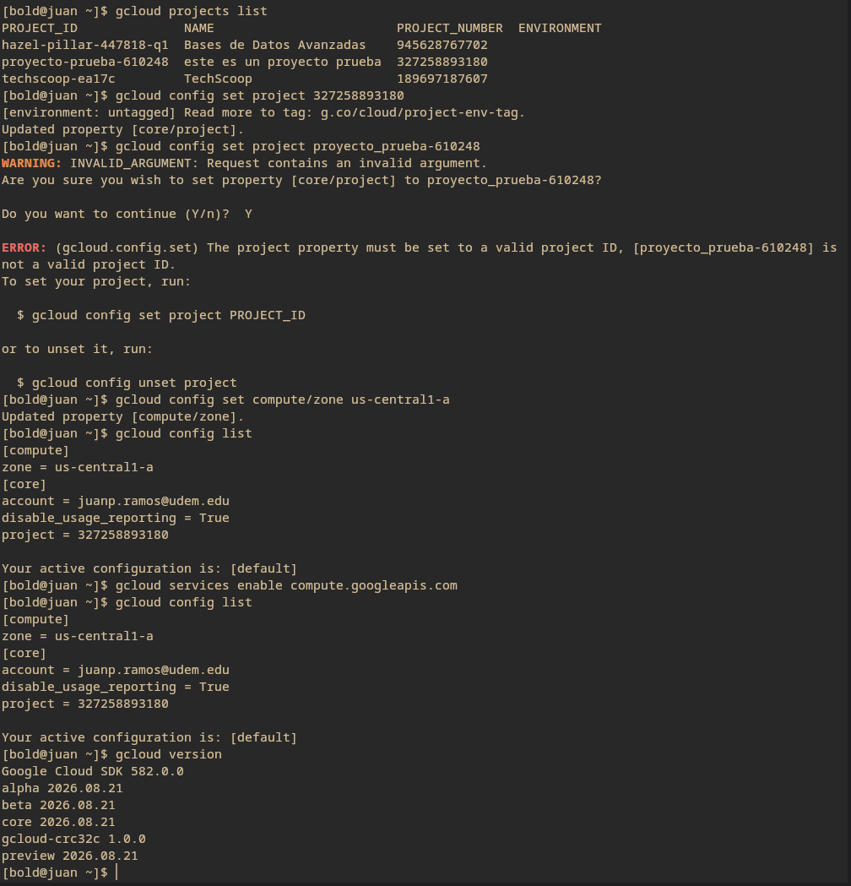
us-central1-a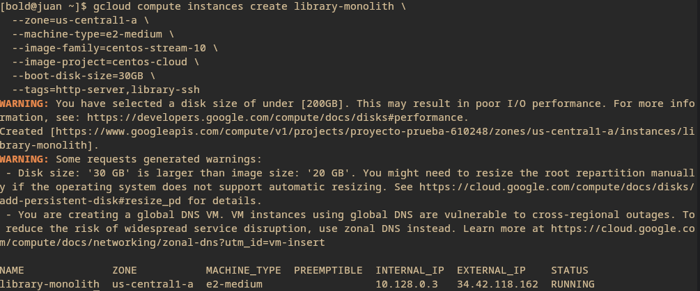
library-monolith, CentOS Stream 10, e2-medium, RUNNING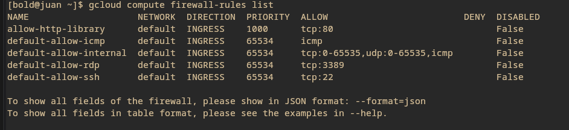
allow-http-library permite TCP/80; no hay TCP/3000 público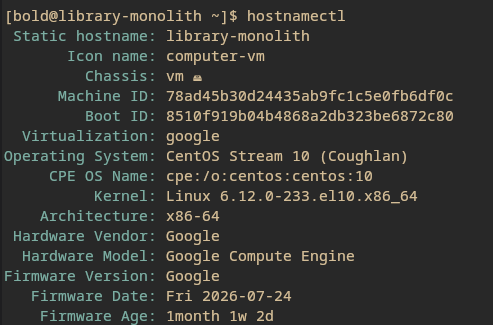
library-monolith, CentOS Stream 10 en Compute Engine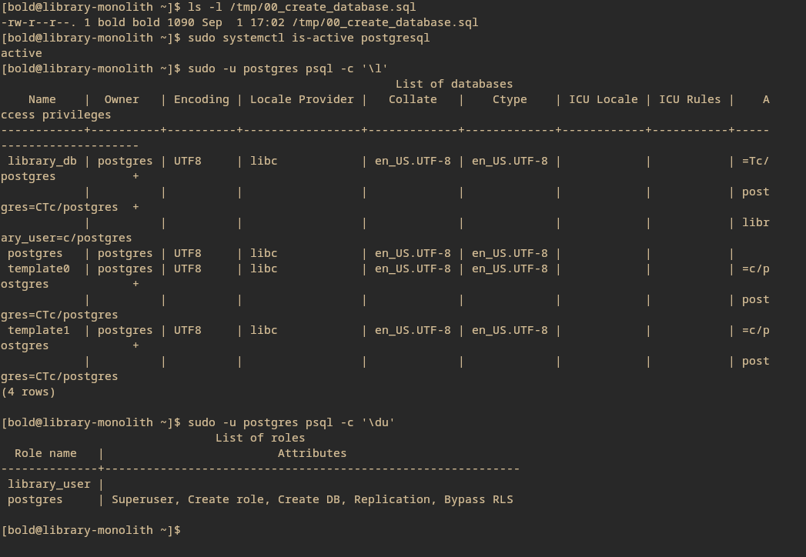
library_db y library_user sin privilegio de superusuario
psql-dt.png: en la VM, sudo -u postgres psql -d library_db -c '\dt'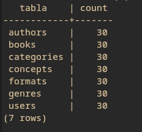
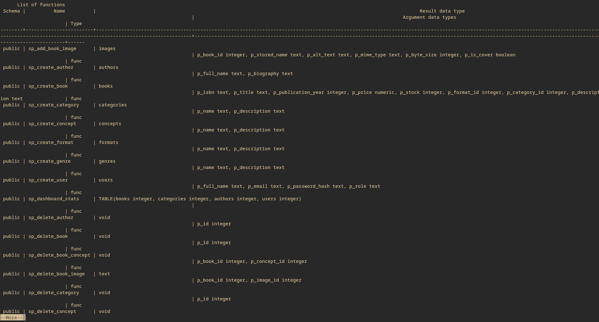
sp_* (búsqueda, CRUD de libros y catálogos)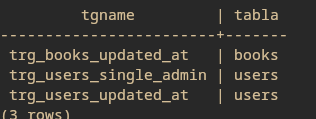
updated_at en libros y usuarios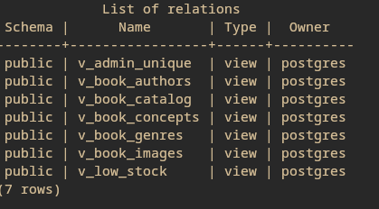
v_book_catalog y v_admin_unique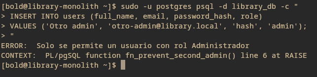
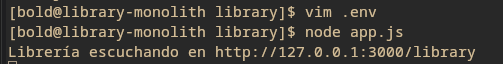
http://127.0.0.1:3000/library, no expuesto a Internet7 Organización de la aplicación
La interfaz, las reglas de negocio y el acceso a datos se despliegan juntos. Por dentro hay separación de responsabilidades: arranque, rutas, servicios, permisos y plantillas. Las pantallas no consultan la base de datos de forma directa.
8 Funcionalidades implementadas
La persona usuaria envía un formulario; el servidor valida, aplica la regla de negocio y devuelve una página HTML.
- Registro, login, logout y perfil.
- Catálogo autenticado con búsqueda por ISBN y título.
- CRUD de libros, autores, géneros, formatos, categorías y conceptos.
- Relaciones libro–autor, libro–género y libro–concepto (definiciones IaaS, PaaS, SaaS, FaaS, etc. en el libro de Cloud Computing).
- Carga JPG/PNG/WebP, texto alternativo y portada.
Para usarla ahora, sin la VM: abrir la librería en este sitio. Cuando el monolito esté en GCP, el acceso público /library se documentará aquí.
9 Seguridad y roles
Revisión completa: SECURITY_REVIEW.md. Controles mínimos:
| Control | Amenaza | Mitigación |
|---|---|---|
| Hash bcrypt | Claves en claro | Coste 10; política 8+ letras y números |
| Archivos de entorno | Secretos en el sitio público | No se publican credenciales ni plantillas con valores reales |
| SQL parametrizado | SQL Injection | $n y stored procedures |
| Validación server-side | Bypass HTML5 | middleware + CHECK |
| requireAdmin | Cliente en CRUD | 403 |
| Sesión | Robo de cookie | httpOnly, SameSite=Lax, path /library |
| Uploads | Web shell | MIME, extensión, 5 MB, nombre aleatorio |
| Errores | Fuga de stack/SQL | mensajes genéricos |
| Mínimo privilegio | Superusuario | rol library_user |
| Un admin | Escalada | índice único + trigger |
| Proceso interno | Exponer la aplicación directo a Internet | El visitante entra solo por el servidor web |
Riesgo residual: CSRF en POST autenticado; backups incompletos si solo se respalda PostgreSQL; TLS depende del proxy.
10 Plan y resultados de pruebas
Matriz: docs/TEST_PLAN.md. Cada caso: ID, requisito, precondición, entrada, pasos, esperado, observado, estado y evidencia. Una captura sin ID no cuenta.
| ID | Requisito | Prueba | Esperado | Observado | Estado |
|---|---|---|---|---|---|
| T-01 | RF-02 | Login admin | Dashboard | Pendiente VM | Pendiente |
| T-03 | RF-05 | Búsqueda ISBN | Libro Cloud Computing | Pendiente VM | Pendiente |
| T-17 | RF-19 | Cliente en /books/new | 403 | Pendiente VM | Pendiente |
| T-19 | RF-20 | Segundo admin | ERROR unique/trigger | ERROR fn_prevent_second_admin | OK |
| T-20 | RNF-01 | ' OR 1=1 -- | Sin dump por inyección | Pendiente VM | Pendiente |
| T-21 | RF-18 | Stock −1 | check_violation | Pendiente VM | Pendiente |
La matriz tiene 30 casos (login, CRUD, integridad, uploads, proxy y usabilidad). Completa la columna Observado con evidencias en evidencias/.
11 Despliegue con Apache/NGINX
La aplicación se verifica primero en el propio servidor y después se publica detrás de Apache o NGINX, bajo la ruta pública de la librería. Quien entra desde fuera no habla con el proceso interno.
node app.js deja la librería en 127.0.0.1:3000/library.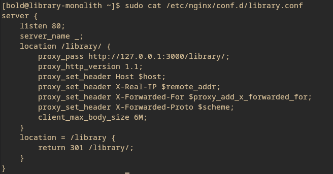
/library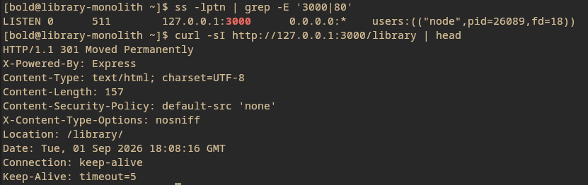
http://IP/library (proxy-library.png), sin secretos.12 Galería de evidencias / screenshots
Cada figura explica qué demuestra, no solo qué se ve. Las capturas viven en evidencias/, junto a este index.html. En la foto debe verse la barra de direcciones. No fotografiar contraseñas, .env ni llaves SSH.
Cuentas: administradora mariana.solis@libreriaonline.mx · lector carlos.hernandez@gmail.com. La aplicación en la VM se prueba en http://127.0.0.1:3000/library y, ya publicada, en http://IP/library.
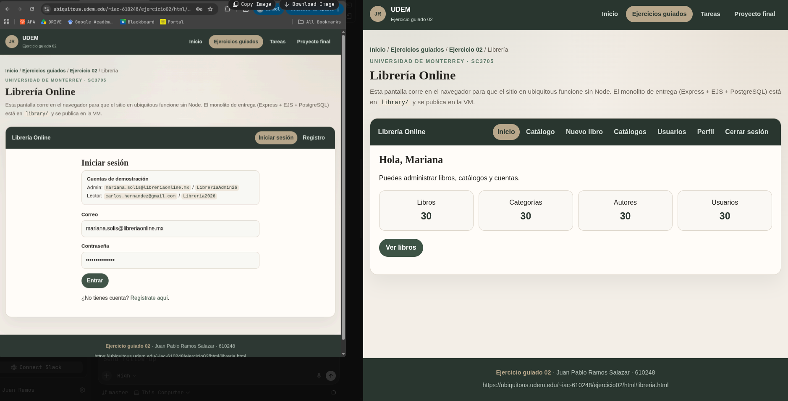
mariana.solis@libreriaonline.mx. La captura debe mostrar el tablero (no el formulario con la clave escrita). Demuestra RF-02: sesión válida y acceso al área autenticada.
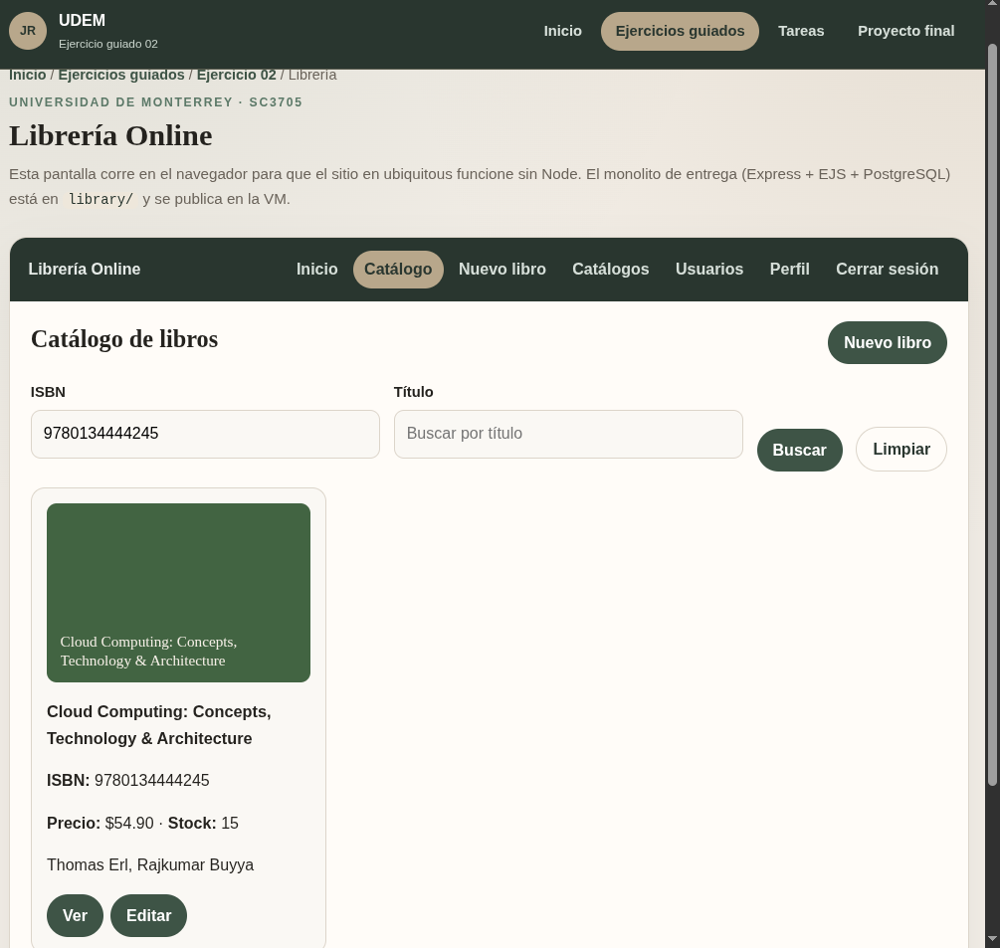
9780134444245. Debe aparecer solo Cloud Computing: Concepts, Technology & Architecture. Demuestra RF-05: el filtro no lista el resto del acervo.
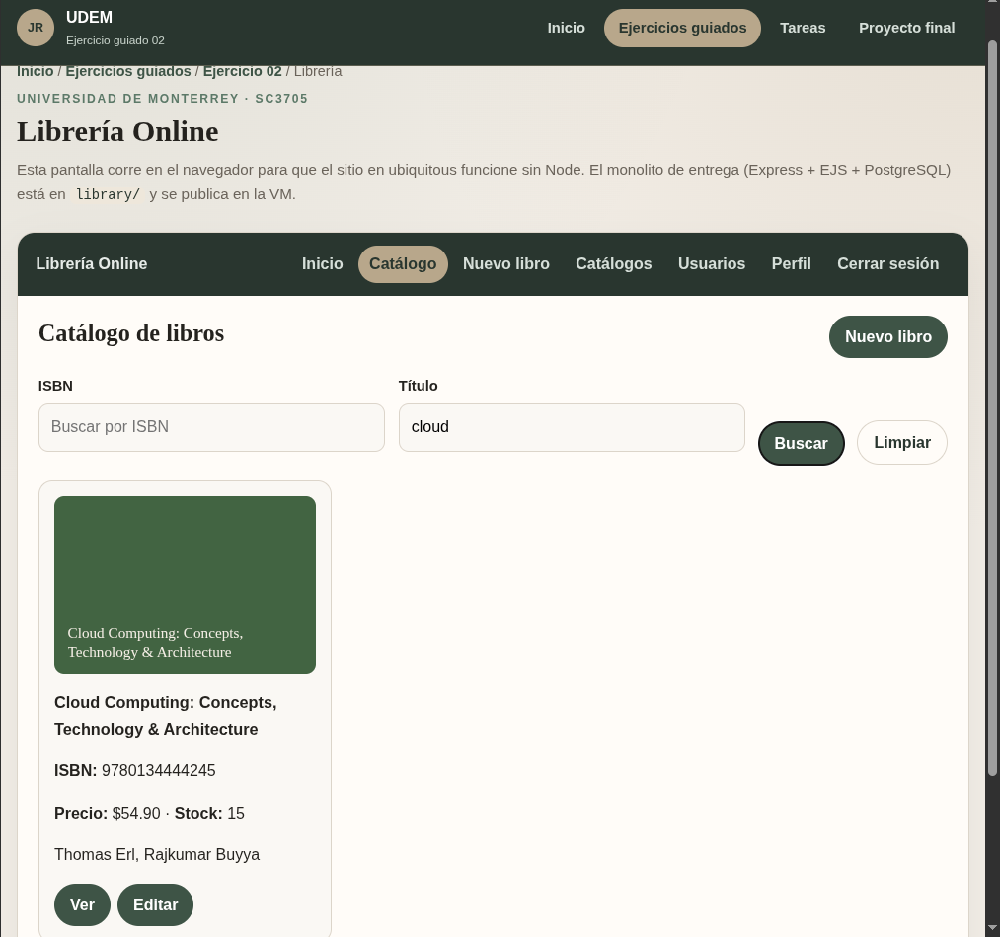
cloud (minúsculas). Debe salir el mismo libro de Cloud Computing. Demuestra RF-06: coincidencia parcial sin importar mayúsculas.
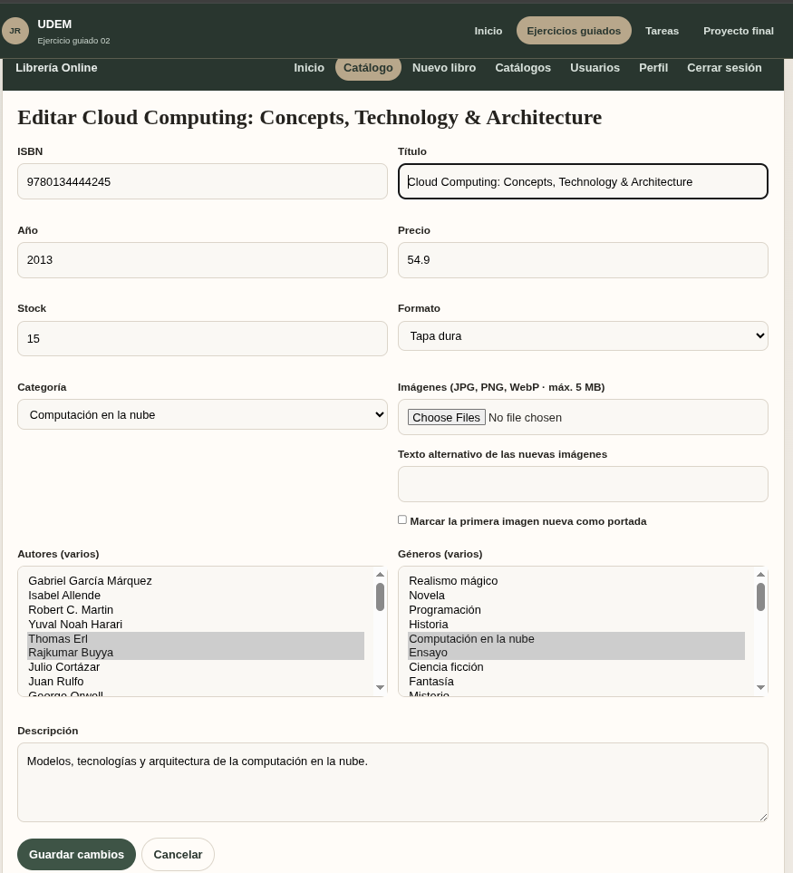
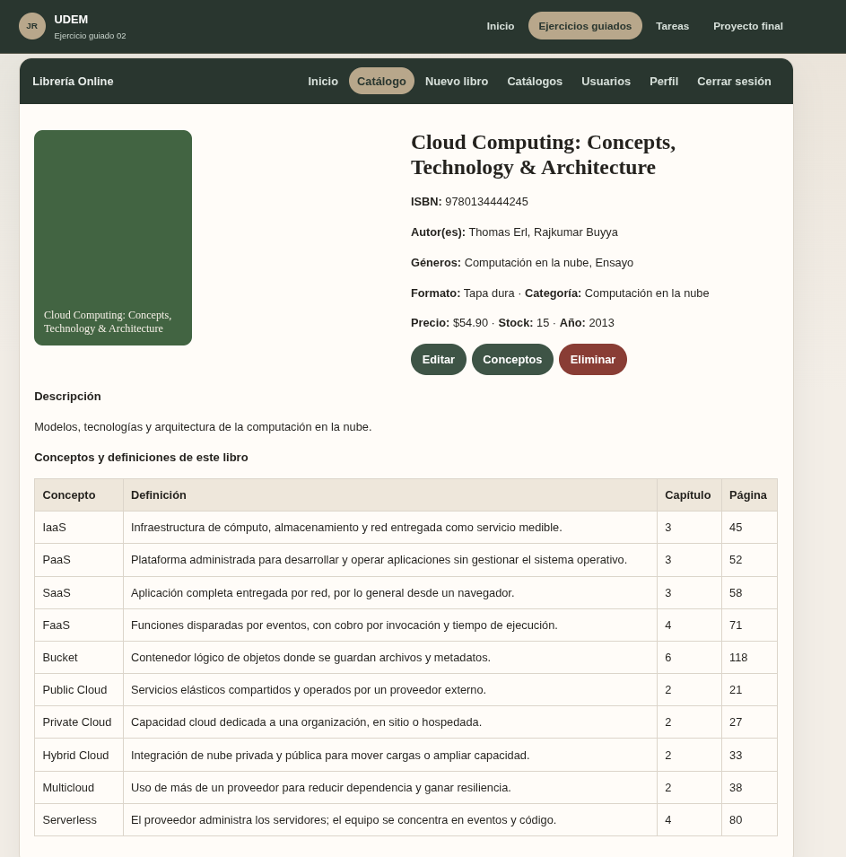


carlos.hernandez@gmail.com y abre /library/books/new (o Alta de libro). Debe verse 403 — Acceso denegado. Demuestra RF-19: el cliente no administra el catálogo.
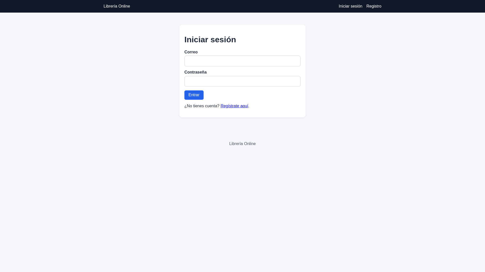
/library/books. Debe redirigir al inicio de sesión, sin catálogo. Demuestra RF-19: las rutas privadas no son públicas.
admin termina en ERROR de fn_prevent_second_admin. Demuestra RF-20: la regla está en la base, no solo en la pantalla.

' OR 1=1 --. No debe listarse todo el catálogo ni un error SQL. Lo esperado: cero coincidencias o un resultado inocuo. Demuestra RNF-01: consultas parametrizadas.

.php como imagen del libro. Debe aparecer un mensaje controlado, sin guardar el archivo. Demuestra RF-17: no se aceptan ejecutables.


/library/books. Debe pedir login otra vez. Demuestra RF-03: la cookie de sesión deja de servir.

http://IP-PUBLICA/library. Debe verse el login o el tablero, con esa URL en la barra, no :3000. Demuestra RNF-06: Apache/NGINX delante; Node sigue en localhost.
Otras pruebas de la matriz (T-07 a T-14, T-21 a T-25, T-30) se documentan en TEST_PLAN.md. Si hay captura, nómbrala evidencias/T-XX-tema.png y anota el resultado observado.
13 Decisiones de ingeniería, problemas y soluciones
Registro canónico: ENGINEERING_DECISIONS.md. Esquema: necesidad → alternativas → decisión → justificación → riesgo → evidencia.
- D1 Monolito: una unidad desplegable. Riesgo: un segundo canal (móvil) tensionaría el corte.
- D2 PostgreSQL directo: demuestra integridad. Riesgo: más SQL manual si el modelo crece.
- D3 EJS: formularios HTML. Riesgo: menos interactividad; CSRF residual en POST.
- D4 Un admin en BD: la UI puede eludirse; el índice/trigger no.
- D5 Imágenes en disco: metadatos en PostgreSQL; el backup de solo BD pierde archivos.
14 Uso documentado de Inteligencia Artificial
La IA se usó como herramienta de ingeniería (reestructura del monolito, huecos frente al PDF, documentación). El estudiante sigue siendo responsable de comprender, probar y justificar.
Historial: AI_PROMPT_HISTORY.md · cambios: AI_CHANGELOG.md · plantilla: PROMPT_MAESTRO_IA.md.
| Fecha | Uso | Archivos | Verificación |
|---|---|---|---|
| 2026-08-31 | Alineación de la librería con el enunciado del ejercicio | Aplicación, SQL 00–06, docs | Revisión estática; ejecución en GCP pendiente |
15 Conclusiones y mejoras futuras
El monolito server-side cubre el escenario académico: un canal web, un equipo y una VM. La 4FN evita cartesianizar autores × géneros × imágenes. La seguridad se defiende en aplicación y en PostgreSQL.
Hacia componentes desacoplados cambiaría: contrato de API, autenticación entre servicios, despliegues independientes y observabilidad distribuida. No se cambia la arquitectura de este ejercicio; se documenta el trade-off.
- Tokens CSRF explícitos además de SameSite.
- Object storage si las imágenes superan el disco de la VM.
- Cerrar evidencias T-01…T-30 en CentOS y publicar el
.tar.gzsin secretos.
16 Descargas de archivos
El paquete descargable no incluye secretos ni dependencias de instalación.
Trabajo en casa de este ejercicio
Las tareas 2a a 2e tienen página propia en el apartado de tareas, agrupadas en el primer parcial.